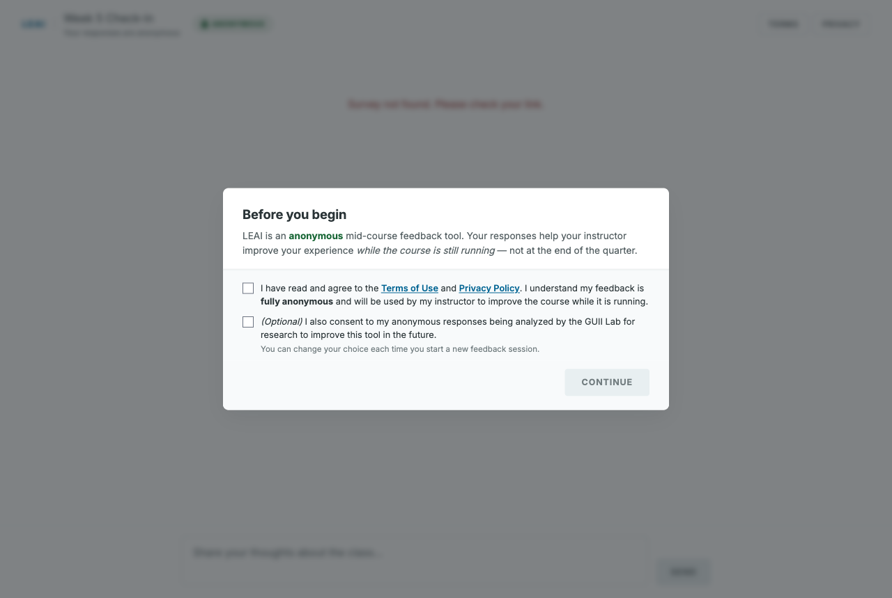
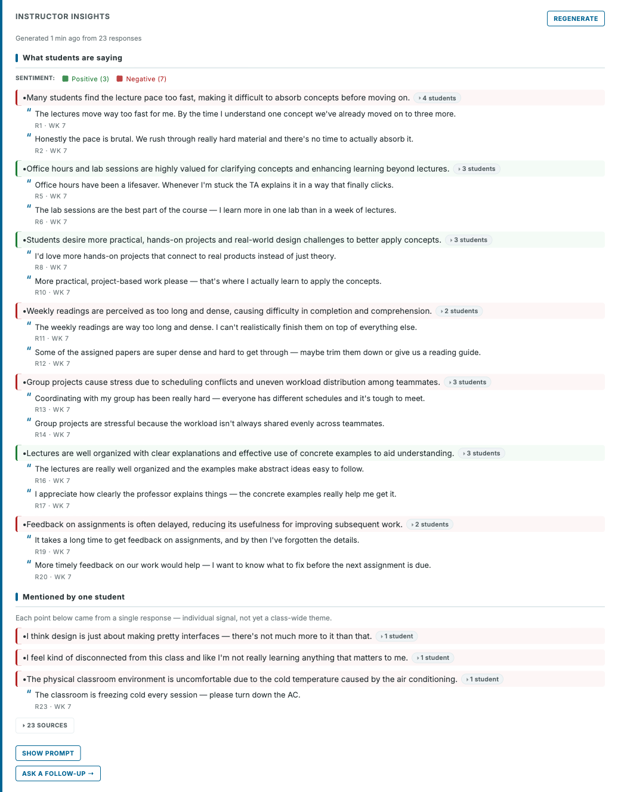
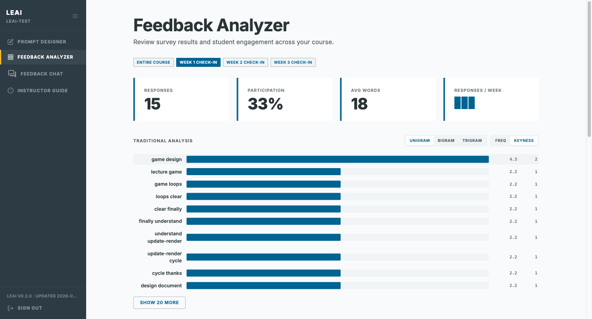

Component 1 · Prompt Designer
An instructor sets up a survey in minutes


- Pick a template, edit the prompt, copy a link.
- One course can have many surveys — one per week, milestone, or project.
- Three modes available: Free-form, In-Group, and Structured Reflection.
- Settings cover anonymity, group setup, and open and close dates.
Component 2 · Feedback Collector
The student has a short conversation




- Open the link — no login, no app, no account.
- Anonymous by default; pseudonymous if the instructor wants names.
- Group-aware mode lets students reflect as a team.
- Voice input for students who type slowly.
- A completion code at the end, in case the instructor wants proof.
Component 3 · Feedback Analyzer
Summary first. Evidence one click away.




Why we built it
Reading 40 student chats by hand is slow. Patterns hide in the transcripts.
How we designed it
- Quick Take — a top-level summary of what students said this week.
- Keyness & n-grams — words and phrases that stood out this week.
- Click any term — jump straight to the actual student lines.
For Structured Reflection
The Analyzer also shows per-section insights, so each section's responses can be read together.